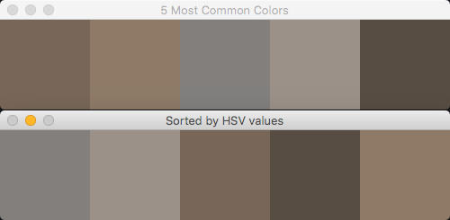

Finding the dominant colors of an image
Posted on Tue 24 July 2018 in OpenCV
The typical way to isolate or find an object in an image is to look for its color. You specify a range of colors, then use OpenCV to identify regions in an image that contain colors within that range. But, even if you know the exact color of your target, lighting, shadows, and your camera's sensor will alter the detected color. So, how do you best determine the color range to use?
In this article, I'll explore some different methods to work with colors. In a future article, we'll use this knowledge, plus selecting a region of interest within an image/video to determine the exact range of colors needed to isolate an object.
Let's say your goal is to isolate the puppy in this image. You'll notice that his fur color varies between an off-white to a golden tan. The foreground is brighter, making his hindquarters darker and less richly colored. The toy he has is only a bit darker red-brown.

An average solution
Your first attempt might be to take an average of the colors to find the midpoint of his range of colors. Then, to make the range you might choose colors a bit darker and lighter than that average. Of course, you wouldn't want to include the grass in the average. Assuming a cropped version of just the puppy, you could use this script to calculate the average color:
1 2 3 4 5 6 7 8 9 10 11 12 13 14 15 16 17 18 19 20 21 22 23 24 25 26 27 28 29 30 31 | #
# Find the average color in an image
#
import cv2
import numpy as np
img = cv2.imread('puppy_cropped.jpg')
height, width, _ = np.shape(img)
# calculate the average color of each row of our image
avg_color_per_row = np.average(img, axis=0)
# calculate the averages of our rows
avg_colors = np.average(avg_color_per_row, axis=0)
# avg_color is a tuple in BGR order of the average colors
# but as float values
print(f'avg_colors: {avg_colors}')
# so, convert that array to integers
int_averages = np.array(avg_colors, dtype=np.uint8)
print(f'int_averages: {int_averages}')
# create a new image of the same height/width as the original
average_image = np.zeros((height, width, 3), np.uint8)
# and fill its pixels with our average color
average_image[:] = int_averages
# finally, show it side-by-side with the original
cv2.imshow("Avg Color", np.hstack([img, average_image]))
cv2.waitKey(0)
|
Which would give you this:

Visually, that resulting average tan looks like it would represent the puppy's colors. In practice though, you probably won't find any pixels in the puppy that match that exact shade. Even if you looked at a range of shades lighter to darker than that average, only a few of his pixels would be included. It's even likely you'd get a few pixels of his toy. As bad as the average works with the puppy, the average would totally fail on a multi-colored object, for example the FIRST® logo.

FIRST®, the FIRST® logo, FIRST® Robotics Competition (formerly also known as FRC®), FIRST® Tech Challenge (formerly also known as FTC®) are trademarks of For Inspiration and Recognition of Science and Technology (FIRST®).
K-means clustering
Let's try a more powerful method. We'll find the most common colors in our image using k-means clustering. A formal definition would go something like "k-means clustering partitions n observations into k clusters". In our case, we have a bunch of pixels (our n) and we want to pull out some number (the k) of colors.
With k-means, you have to specify the number of clusters up-front. There are other techniques that don't have this requirement. In any case, it's not a significant limitation for our needs here.
We'll use the scikit-learn library's sklearn.cluster.kmeans function to do the heavy lifting. (OpenCV itself offers a kmeans() function, but scikit's is a bit more flexible for our needs). The following script is based on a post on the PyImageSearch blog (a great resource!)
1 2 3 4 5 6 7 8 9 10 11 12 13 14 15 16 17 18 19 20 21 22 23 24 25 26 27 28 29 30 31 32 33 34 35 36 37 38 39 40 41 42 43 44 45 46 47 48 49 50 51 52 53 54 55 56 57 58 59 60 61 62 63 64 65 66 67 68 69 70 71 72 73 74 75 76 77 78 79 80 81 82 83 84 85 86 87 | #
# Use k-means clustering to find the most-common colors in an image
#
import cv2
import numpy as np
from sklearn.cluster import KMeans
def make_histogram(cluster):
"""
Count the number of pixels in each cluster
:param: KMeans cluster
:return: numpy histogram
"""
numLabels = np.arange(0, len(np.unique(cluster.labels_)) + 1)
hist, _ = np.histogram(cluster.labels_, bins=numLabels)
hist = hist.astype('float32')
hist /= hist.sum()
return hist
def make_bar(height, width, color):
"""
Create an image of a given color
:param: height of the image
:param: width of the image
:param: BGR pixel values of the color
:return: tuple of bar, rgb values, and hsv values
"""
bar = np.zeros((height, width, 3), np.uint8)
bar[:] = color
red, green, blue = int(color[2]), int(color[1]), int(color[0])
hsv_bar = cv2.cvtColor(bar, cv2.COLOR_BGR2HSV)
hue, sat, val = hsv_bar[0][0]
return bar, (red, green, blue), (hue, sat, val)
def sort_hsvs(hsv_list):
"""
Sort the list of HSV values
:param hsv_list: List of HSV tuples
:return: List of indexes, sorted by hue, then saturation, then value
"""
bars_with_indexes = []
for index, hsv_val in enumerate(hsv_list):
bars_with_indexes.append((index, hsv_val[0], hsv_val[1], hsv_val[2]))
bars_with_indexes.sort(key=lambda elem: (elem[1], elem[2], elem[3]))
return [item[0] for item in bars_with_indexes]
# START HERE
img = cv2.imread('puppy_cropped.jpg')
height, width, _ = np.shape(img)
# reshape the image to be a simple list of RGB pixels
image = img.reshape((height * width, 3))
# we'll pick the 5 most common colors
num_clusters = 5
clusters = KMeans(n_clusters=num_clusters)
clusters.fit(image)
# count the dominant colors and put them in "buckets"
histogram = make_histogram(clusters)
# then sort them, most-common first
combined = zip(histogram, clusters.cluster_centers_)
combined = sorted(combined, key=lambda x: x[0], reverse=True)
# finally, we'll output a graphic showing the colors in order
bars = []
hsv_values = []
for index, rows in enumerate(combined):
bar, rgb, hsv = make_bar(100, 100, rows[1])
print(f'Bar {index + 1}')
print(f' RGB values: {rgb}')
print(f' HSV values: {hsv}')
hsv_values.append(hsv)
bars.append(bar)
# sort the bars[] list so that we can show the colored boxes sorted
# by their HSV values -- sort by hue, then saturation
sorted_bar_indexes = sort_hsvs(hsv_values)
sorted_bars = [bars[idx] for idx in sorted_bar_indexes]
cv2.imshow('Sorted by HSV values', np.hstack(sorted_bars))
cv2.imshow(f'{num_clusters} Most Common Colors', np.hstack(bars))
cv2.waitKey(0)
|
That's a bunch of code I realize. This script does a few things; let's go through it. Skip the functions for now and jump to the "Start Here" part. The script reads in our image and determines its height and width. Then we convert it from a height by width matrix into a list of RBG values for easier processing.
Next, the script examines the image (our cropped puppy) and uses KMeans() to find the five most common colors (lines 59 - 61). The make_histogram() function essentially counts the pixels in each of those "buckets" returning those counts as a value between 0 and 1. We sort those "buckets" into a descending order of most to least common. Finally, starting on line 70, the code outputs some useful info about those dominant colors. We loop through our "buckets" to create images (aka "bars") from those colors and show them in OpenCV windows.
Output
Check out your console: the script outputs the RGB and HSV color values for each of the colored boxes.
> python dominant_color.py
Bar 1
RGB values: (131, 114, 99)
HSV values: (14, 62, 131)
Bar 2
RGB values: (153, 133, 114)
HSV values: (15, 65, 153)
Bar 3
RGB values: (141, 138, 136)
HSV values: (12, 9, 141)
Bar 4
RGB values: (165, 156, 148)
HSV values: (14, 26, 165)
Bar 5
RGB values: (99, 87, 75)
HSV values: (15, 62, 99)
Given our cropped puppy image, the script outputs two CV2 windows. The first shows colored boxes for the top 5 dominant colors, listed most to least common left to right. If you move that window out of the way, you'll see a similar one showing those same colors arranged in HSV order (sorted lowest to highest by hue, saturation, then value).

It might be surprising when seen as RGB boxes on your screen, but the dominant colors are fairly close in hue, even in saturation. In fact, hue values range between 12 and 15. (Sidenote: OpenCV represents hue ranges from 0-180, not 0-360 as graphics apps typically do.)
This gives us just what we need to isolate objects in an image or video stream. In a future article, I'll show how to isolate objects based on their color. My plan is to then go on to show how to discern info about the object, such as its actual size, position in the real world, and so forth. But, let's not get ahead of ourselves!
In summary
In this article, I showed how to find an average color of an image. While I didn't go on to prove it with an object isolation script, average colors are typically the best way to represent a target object. Instead, I showed a more powerful technique, the k-means cluster. I showed how to determine the five most common colors. The script I provided output convenient RGB and HSV values that you can use for object isolation.
Source materials and further explorations: